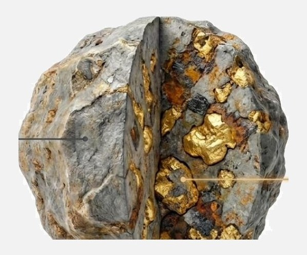
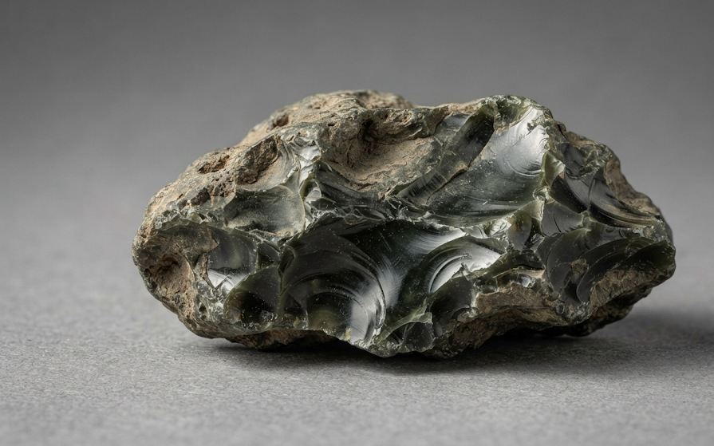
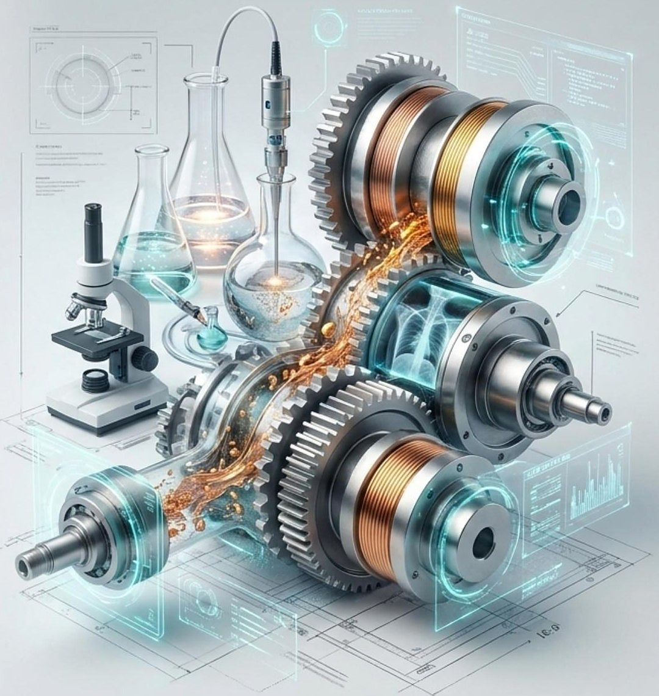
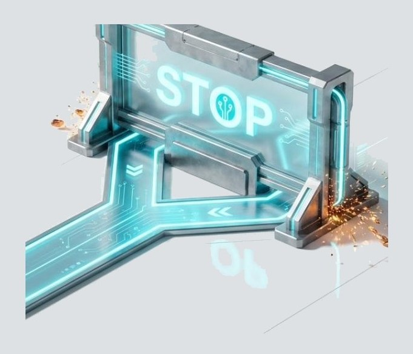
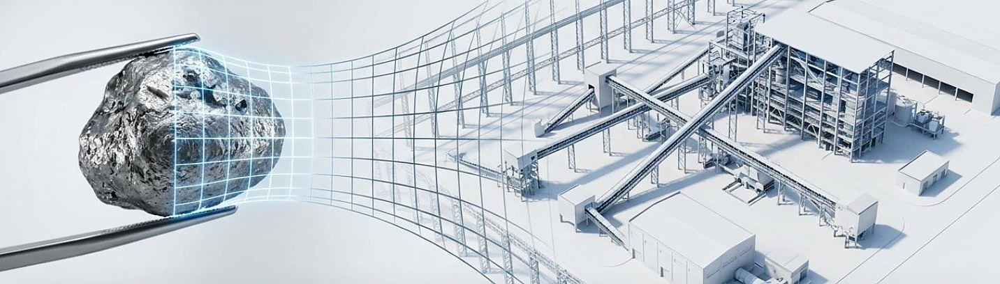

Our first industrial facility is in preparation.
What we offer is not a list of built facilities but a method: at every stage it is visible what data the decision rests on, and any stage can be stopped.

R. Keren works with industrial materials: slag, sludge and dumps from secondary metallurgical production.
We do not supply equipment and we do not sell ready-made process lines. Our work begins with the client's material, not with a catalogue.

We establish whether the material can be processed and turned into a product.
We select the solution and the equipment for the specific material, with no commitment to any manufacturer.
We coordinate the engineering part of the project and supply from different manufacturers.
We support implementation on site.

Testing of the material is carried out by a party with no connection to equipment supply, so that the figures a decision rests on do not depend on whoever sells that equipment. We have no laboratory of our own: testing is carried out by an independent laboratory to a programme we write for the specific material.
Sections of documentation that require local legal capacity or a local signature under the laws of the country of the project are prepared by an organisation in that country — the client's existing designer, a plant contractor, or an organisation engaged for the project. We do not impose a designer on the client: the choice is yours.
Material data → preliminary assessment → testing → economic assessment → solution and engineering → implementation
After each stage, the decision to continue is yours.
If the material data shows that processing makes no sense, we say so directly and stop at that stage.


We will tell you whether it makes sense to move forward.
Submit material data